I can jump into task-based workflows, follow design direction and keep communication practical.
WordPress • Elementor • WooCommerce • Shopify
Premium website implementation for teams that care about trust.
I help agencies, businesses and ecommerce brands turn Figma designs and business goals into clean, responsive websites built with WordPress, Elementor, WooCommerce, Shopify and custom front-end code when needed.
Agency-readyClear updates, scoped execution, review-friendly workflow.
Responsive-firstDesktop, tablet and mobile handled with care.
Builder + codeElementor speed with custom CSS/JS control.
Core stack
 WordPress
WordPress
 HTML
HTML
 JavaScript
JavaScript
WordPressElementor
ACF
HTMLCSS
JavaScriptKadence
Positioning
I’m useful when a design needs to become a polished, maintainable website.
I build pages that explain the offer clearly and help visitors take the next step.
I support product pages, landing pages and store sections with clean front-end implementation.
Selected work
Projects presented with context, role and implementation value.
A stronger portfolio is not a screenshot gallery. Each project should quickly explain what I worked on, what stack was used and why the implementation mattered.
Agency collaborationWordPressElementor
NeuroSky
Corporate website work for a neurotechnology brand. I helped build responsive pages, maintain layout consistency and implement design updates inside an agency workflow.
- Role
- Page build & responsive implementation
- Value
- Professional presentation, design fidelity and cleaner user experience
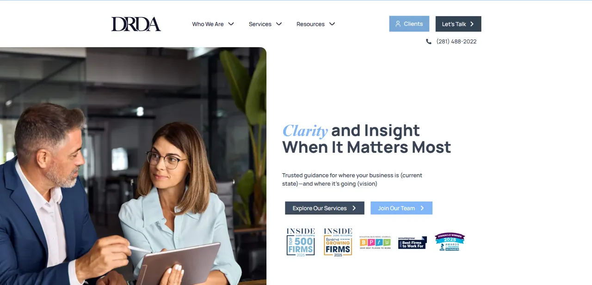
Client workWordPress
DRDA CPA
WordPress / Elementor work for a CPA and advisory firm, focused on professional page structure, usability and clean brand presentation.
View live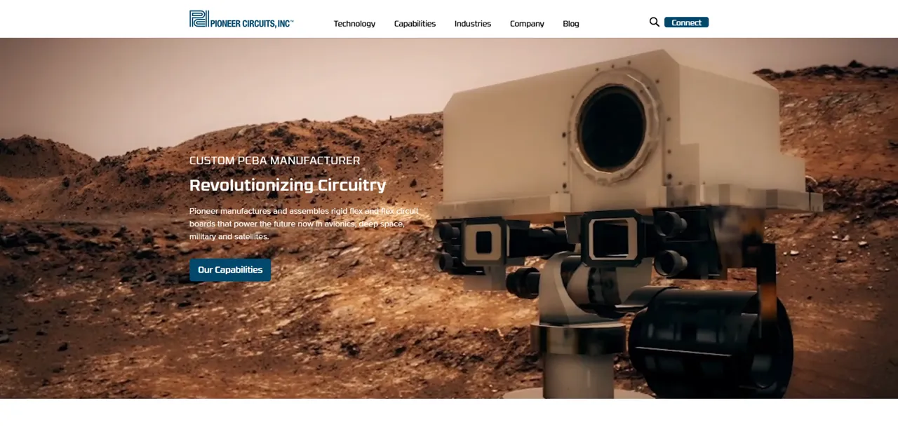
Agency supportCustom plugin
Pioneer Circuits
Page builds and a custom search-related implementation for a high-tech PCB manufacturer with a more technical content structure.
View liveServices
The work I should be hired for.
Focused services that match my strongest experience instead of trying to sound like a full-stack software agency.
Figma to WordPress / Elementor
Responsive page builds with careful spacing, hierarchy and visual consistency from design files.
WordPress business websites
Professional websites for service businesses, local brands and agency clients that need trust and clarity.
WooCommerce front-end customization
Product pages, landing pages, quantity controls, variation UI and ecommerce layout improvements.
Shopify theme/page support
Section-based pages, theme customization and Figma-to-Shopify implementation for ecommerce brands.
Custom CSS / JavaScript
Targeted front-end solutions when Elementor or a theme cannot produce the exact interaction or layout.
SEO-ready structure
Clean headings, readable content sections, image alt text awareness and support for Yoast / Rank Math workflows.
Why work with me
Good implementation is a mix of taste, control and judgment.
I care about the details that make websites feel professional: spacing, typography, responsive behavior, image handling, clear CTAs and safe execution on real client sites.
Process
A practical workflow for projects that need to ship cleanly.
No mystery, no overcomplication. The goal is to understand what matters, build it well and prepare it safely for launch.
Clarify the goal
Audience, offer, CTA, design requirements and what the page needs to accomplish.
Map the build
Review Figma, theme limits, reusable sections, responsive behavior and any custom code needs.
Build responsively
Implement the layout with spacing, typography and device behavior in mind.
Polish and prepare
Review details, fix issues, test key flows and keep deployment controlled.
More examples
A wider look at websites, landing pages, ecommerce and blogs.
These examples add range without competing with the featured case studies above.
01
Websites
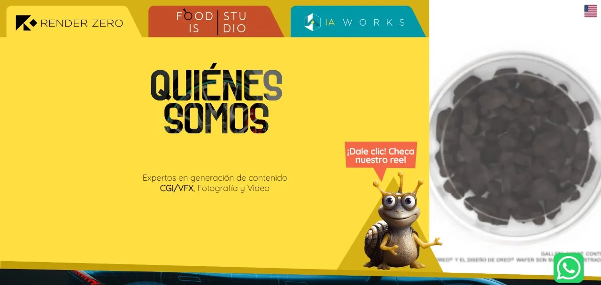
Render Zero
High-design agency site built with HTML, CSS and JavaScript.
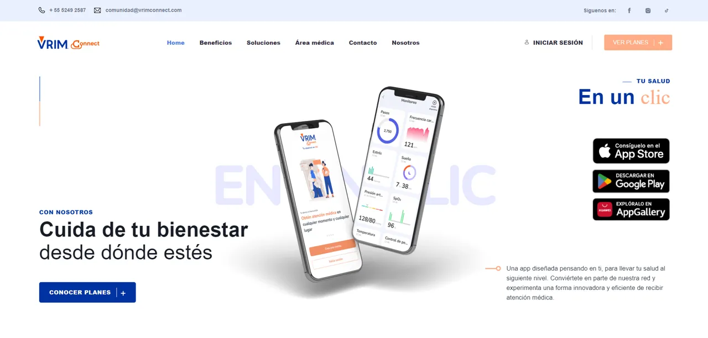
VRIM Connect
WordPress / Elementor site following mockups and enhanced with ACF.
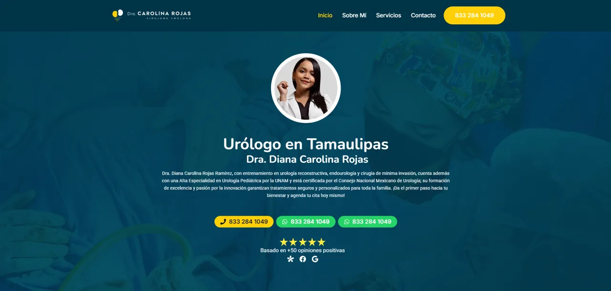
Urology Specialist
Custom site using Gutenberg, Kadence and custom code.
02
Landing pages
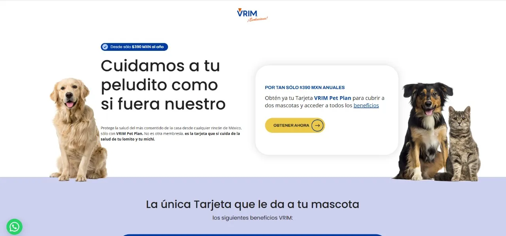
Pets
WordPress / Elementor landing page based on a focused design direction.
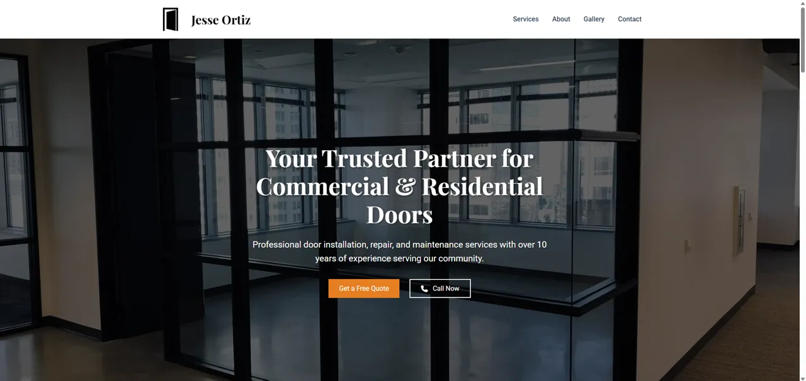
Jesse Ortiz Doors
Responsive service website built with HTML, CSS and JavaScript.
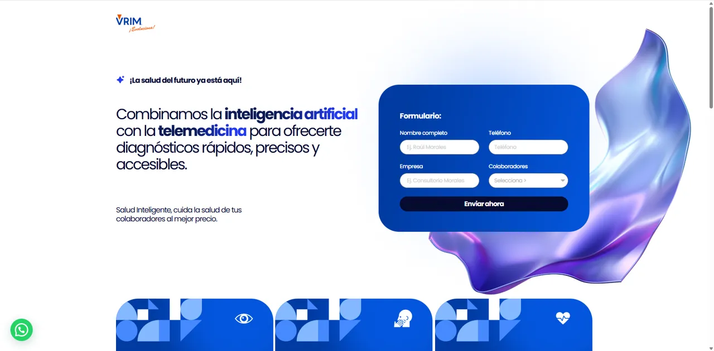
Telemedicine Studies
Service landing page with a clear contact flow and conversion-oriented layout.
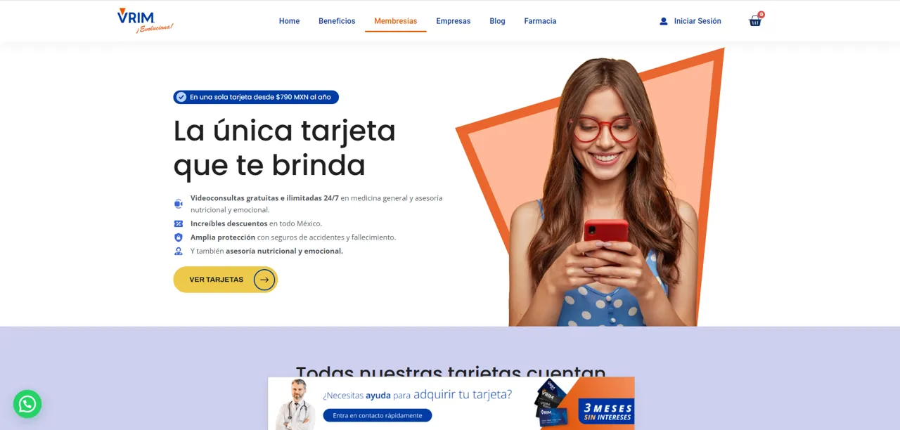
Memberships
Promotional page with custom HTML/CSS enhancements.
03
Ecommerce & content
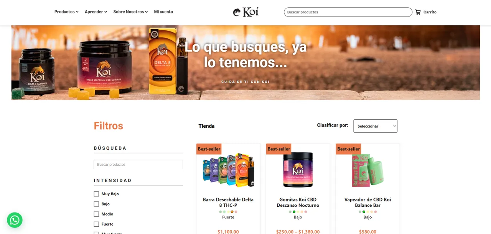
Koi Ecommerce
WooCommerce storefront with Elementor Pro and ACF.
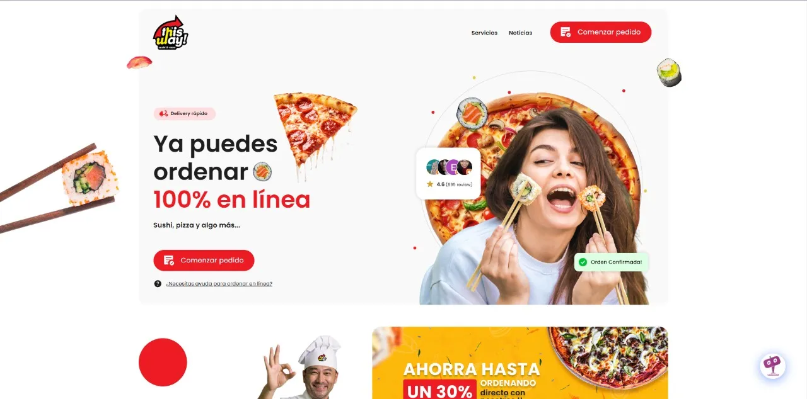
This Way
WooCommerce project with operational customizations.
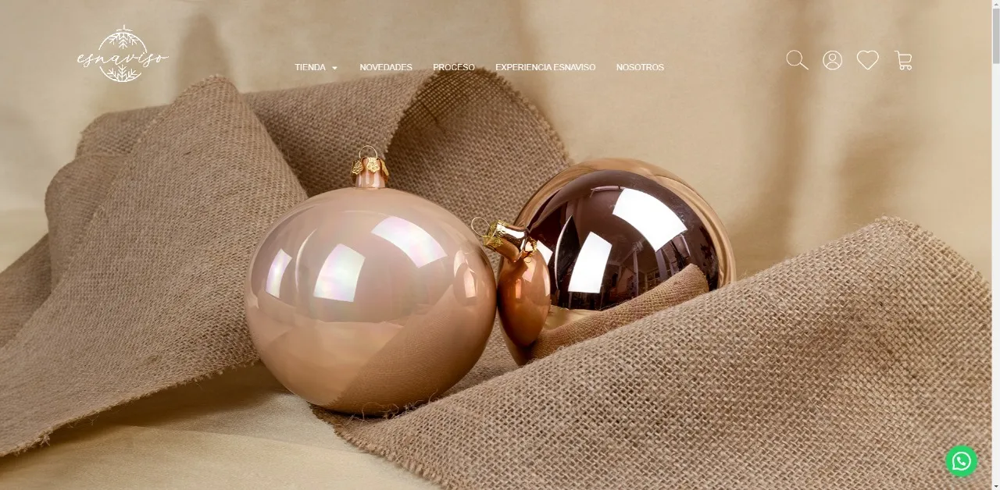
Esferas Esnaviso
WooCommerce store for decorative ornaments.
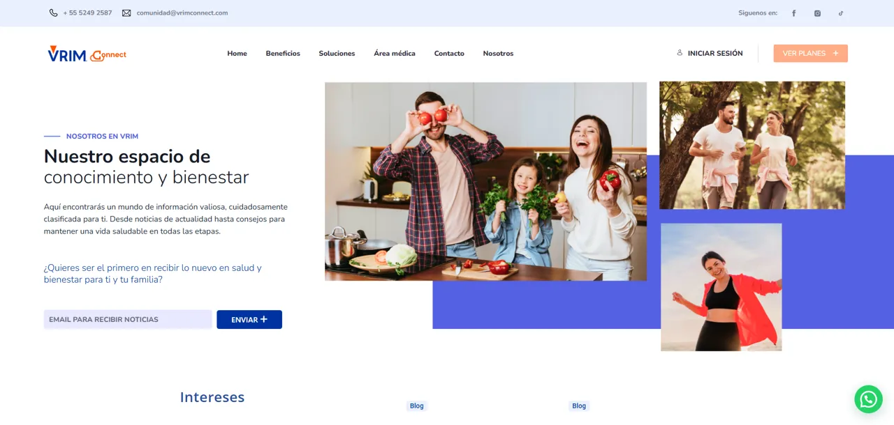
Blog VRIM Connect
Elementor blog with subscription flow and banner CTAs.
FAQ
Questions agencies and clients usually ask before starting.
Short answers that clarify where I fit best and how I approach website work.
WordPress / Elementor builds, Figma-to-WordPress implementation, ecommerce front-end customization, landing pages, responsive fixes and agency collaboration where clean execution matters.
No. I use Elementor and builders for speed and maintainability, but I also write custom HTML, CSS and JavaScript when the design or interaction needs more control.
Yes. I’m comfortable with task-based workflows, asynchronous updates, design reviews and collaboration with technical leads or project managers.
I prefer staging, draft themes, unpublished themes or local setups whenever possible. The goal is to reduce risk and avoid breaking production sites.
Let’s build something solid
Need help building or improving a WordPress website?
I’m a good fit if you need a dependable developer with a clean eye for implementation, responsive details and practical communication.